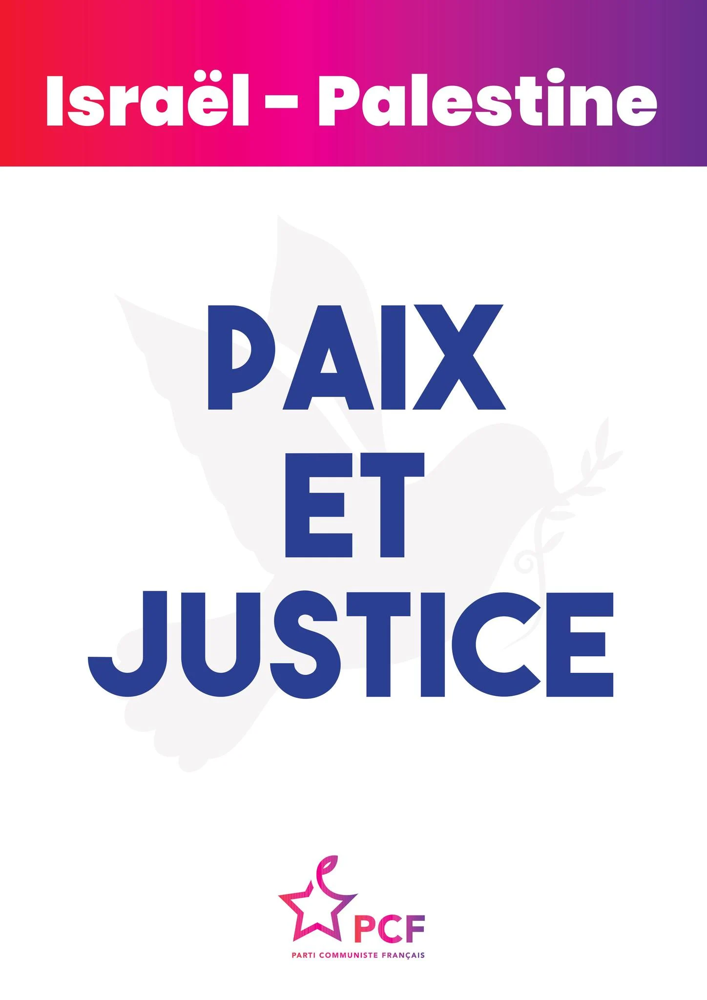

Appel relayé
À Niort, nouvel appel au cessez-le-feu pour le 18 novembre
Date indiquée par Facebook · 17 novembre 2023
Repères éditoriaux
Le Collectif Palestine 79 appelle à un rassemblement pour un cessez-le-feu. La galerie du 18 novembre documente la mobilisation.
Texte conservé avec la publication
A l'appel du Collectif Palestine 79, le prochain rassemblement pour exiger un cessez-le-feu immédiat et la Paix à Gaza aura lieu :
Samedi 18 novembre à 15h00
Place Raoul Auzanneau (quartier du Clou Bouchet) à Niort
Appel national PCF :
Les bombardements qui frappent et endeuillent la population civile de Gaza s'accompagnent d’une catastrophe humanitaire avec le déplacement forcé de la population, le manque d’eau, de nourriture et d’énergie du fait du blocus sans compter la destruction des infrastructures hospitalières et le manque de moyens médicaux pour porter secours aux blessés.
L’horreur des attaques terroristes du Hamas le 7 octobre dernier contre les civils israéliens a précipité la région dans le chaos. Le Hamas n’est en rien un mouvement de libération mais une organisation terroriste. Et la riposte décidée par le gouvernement d’extrême droite de Nethanyahu, qui frappe indistinctement la population civile à Gaza, est devenue « une punition collective » comme l’a dénoncé Philippe Lazzarini, commissaire général de l’Agence des Nations unies pour les réfugiés palestiniens (UNRWA). Certaines attaques pourraient même constituer des crimes de guerre.
Face à cette situation, nos organisations portent ensemble les propositions suivantes pour la paix et la justice en Israël – Palestine :
La libération immédiate et sans condition de tous les otages ;
• Un cessez-le-feu immédiat, comme l’ont demandé toutes les organisations humanitaires lors de la conférence du 9 novembre dernier ;
• La levée du blocus de Gaza
• La fin des violations des droits humains et de la colonisation en Cisjordanie ;
• La relance du processus de paix pour la reconnaissance de l’État de Palestine aux côtés de l’État d’Israël permettant aux peuples palestiniens et israéliens de vivre côte à côte et en sécurité.
Et nous lançons un appel aux Françaises et aux Français, un appel à l’unité de la Nation. L’antisémitisme et le racisme sont des crimes contre la République toute entière. Combattons-les ensemble avec la plus grande fermeté !
Dimanche dernier, nous marchions ensemble contre l'antisémitisme et tous les fauteurs de haine et de racisme.
Aujourd'hui, nous appelons ensemble à ce que tous les Françaises et les Français qui souhaitent la paix se joignent en masse à la manifestation de samedi 18 novembre pour porter avec nous ces propositions et cette exigence d’unité du pays.
Nous appelons également à participer ce dimanche à la marche silencieuse initiée par le monde de la culture dans le respect des modalités annoncées par le collectif "Une autre voix".

Sources
Archive rouge · export Facebook · AR-0002-FB-01540
À lire aussi · À Niort, le rassemblement du 18 novembre pour le cessez-le-feu